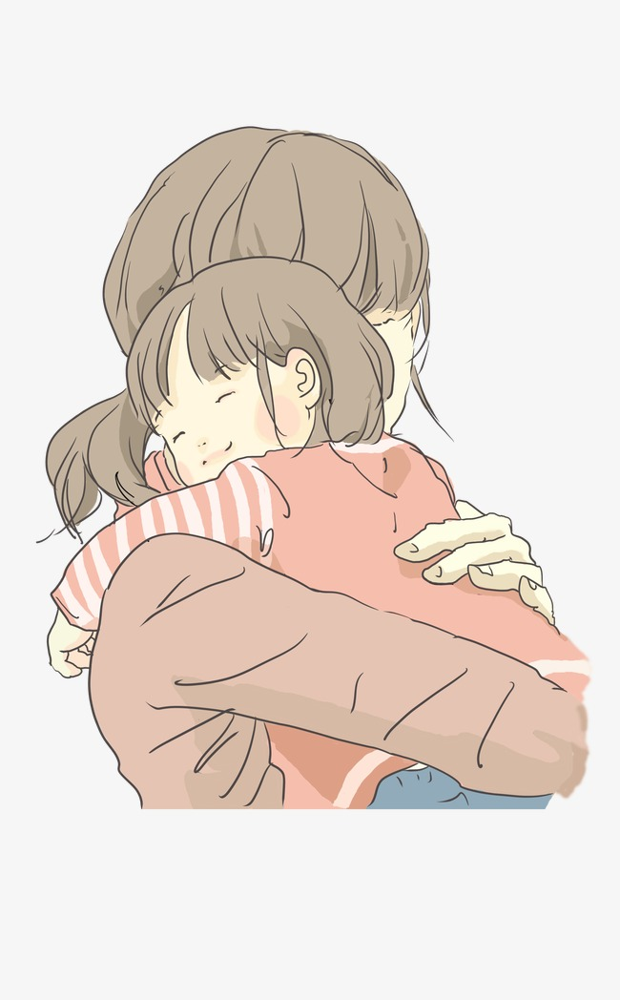

GẶP MẸ TRONG MƠ
Một chiều êm ả, ếch nhái văng vẳng tiếng kêu rang ngoài đồng theo gió nhẹ đưa vào cái chòi chăn vịt giữa đồng. Tiếng cười khanh khách, tóc đen óng mượt xõa ngang vai, chỉ tiếc thay mẹ bị điên, cơn điên của di chứng bại não mà Ngoại không kịp cứu chữa.
Một chiều êm ả, ếch nhái văng vẳng tiếng kêu rang ngoài đồng theo gió nhẹ đưa vào cái chòi chăn vịt giữa đồng. Tiếng cười khanh khách, tóc đen óng mượt xõa ngang vai, chỉ tiếc thay mẹ bị điên, cơn điên của di chứng bại não mà Ngoại không kịp cứu chữa.
Thế là mẹ được chị Hai và anh rể đưa hẳn ra ở chòi vịt với tội phá phách. Thôi đời mẹ quanh quẩn với mấy con vịt cũng vui, nhìn chúng ăn ngoài đồng, mẹ cười thật hạnh phúc.
Mẹ mang thai tôi và bị đuổi đi khỏi xóm. Và rồi, tôi ra đời sau những ngày lưu lạc rày đây mai đó của người điên.
Tôi lớn lên bên gánh ve chay của khu nhà ổ chuột , tôi vẫn hay nắm bàn tay mẹ đi nhặt ve chay để bán kiếm tiền, bữa cơm nghèo bên người mẹ điên, ngủ bên đóng rác mùi hôi, mùi mốc, mùi thối và mùi hạnh phúc vì tôi vẫn còn có mẹ bên cạnh, mẹ điên dại nhưng tôi thích đôi bàn tay mẹ ôm tôi vào lòng, thích mẹ nhìn tôi và đôi khi mẹ cũng biết hôn tôi.

Kể từ hôm đó, tôi bắt đầu những ngày xa mẹ, mặc cho mưa hai nắng, đứa trẻ mười hai tuổi như tôi vẫn tìm mẹ ngày đêm, tôi không biết giờ ai cho mẹ ăn, nước đâu mẹ uống, ai sẽ chải tóc cho mẹ, ai sẽ bới tóc cho mẹ, hay giờ mẹ đang sợ hãi khi người đàn ông cầm chay rượu bước đến gần mẹ.
Tôi ôm bà Bảy khóc sướt mướt, từ nhỏ tôi sinh ra được cũng nhờ ông bà Bảy cưu mang, nhờ hàng xóm giúp đỡ.
Lỡ ơi, ông bà Bảy thương con lắm, nhưng hoàn cảnh ông bà con thấy đấy, chỉ có mỗi gánh hủ tiếu gõ hằng đêm kiếm tiền lo thân già, giờ con cũng không còn mẹ, thôi cứ về ở với ông bà, có bữa nào hay bữa đấy, bà nghẹn ngào quệt nước mắt.
Vậy là cuộc sống của tôi bước sang một trang mới, hằng đêm tôi đẩy xe hủ tiếu phụ ông bà, vừa bán vừa tìm mẹ.
Ai lại quán tôi cũng hỏi về mẹ, nhưng mẹ đã đi thật rồi. Tôi đã trưởng thành theo thời gian, ông bà nay đã già nhiều, nếp nhăn chiếm cả gương mặt. Đã hai mươi mấy tuổi đầu nhưng tôi vẫn thèm lắm tiếng gọi MẸ ơi và tiếng ru à ơi trong cơn điên dạy của mẹ.
Nguyễn Trang